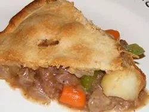

Meat Pie
Home

Description
A meat pie is a savory pastry filled with minced meat (often beef) and
sometimes vegetables like carrots and potatoes, all encased
in a flaky or shortcrust pastry. It's a popular snack or light meal,
often enjoyed on the go, known for its rich, hearty filling and satisfying crust.
Ingredients
- 1 recipe pastry for a 9 inch single crust pie
- 3 tablespoons margarine
- ½ cup chopped onion
- 1 potato, diced
- ⅓ cup all-purpose flour
- ½ teaspoon dried oregano
- ½ teaspoon garlic powder
- ¼ teaspoon black pepper
- 1 ¼ cups beef broth
- 1 carrot, chopped
- 1 cup frozen green peas
- 2 cups cubed cooked or leftover beef
Steps
- Preheat the oven to 425 degrees F (220 degrees C).
On a lightly floured surface, roll the pie crust out into a 12 inch circle.
Set aside.
- Melt margarine in a saucepan over medium heat.
Add potato and onion, and cook until the onion is tender, but not brown.
Sprinkle the flour over the mixture, and stir to blend.
Season with oregano, black pepper and garlic powder.
Pour in the beef broth, and add the peas, carrot and beef.
Bring to a boil. Transfer the mixture to a 2 quart casserole dish,
and place the pastry over the top.
Cut slits for steam, and flute the edges.
- Place on a baking sheet, and bake for 25 to 30 minutes,
or until crust is golden. Let stand 10 minutes before serving to thicken.